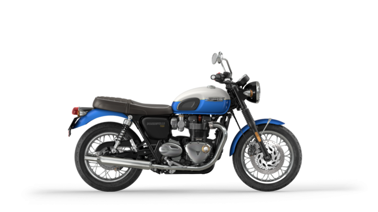

Motorcycles are like cars, but simpler, and exposed. There are a variety of parts that are in the open for anyone to point to and identify. Now you may know absolutely nothing about bikes, but you don't have to. All the tid bits and facts will be in the "Parts" page in the Motorcycle Menu.

Brief Background
There are all sorts of different motorcycles that have been made. The early bikes had old school technology, such as carburetors, and very little saftey features. Thanks to professional racing, a lot of their features have made their way onto the public road to help increase saftey, emmisons, and efficiency. Nowadays, motorcyles have electronic everything; From the fuel injection to the cruise control. Nonetheless they share a lot of the same parts in a different form.